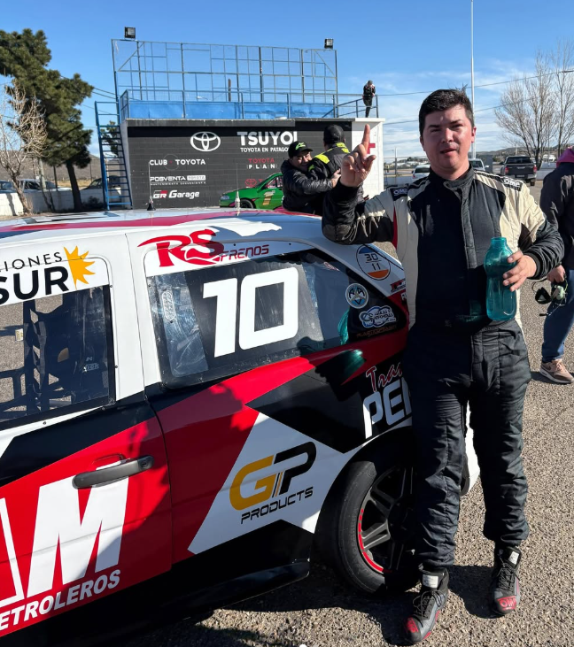

Miranda se llevó la victoria en una final con sorpresas

La sexta fecha del campeonato del Turismo Pista Gol 1.6 tuvo todos los condimentos: dominio en clasificación, series disputadas y una final marcada por el abandono del líder.
En la clasificación, el más rápido fue Renzo Blotta, seguido por Daniel Miranda y Arián Gómez. Los diez mejores los completaron Agustín Montesino, Pablo Pires, Santiago Gamba, Martín Ebene, Nicolás D’Elia, Daniel James y Luciano Álvarez.
Series
1ª Serie: victoria para Renzo Blotta, escoltado por Arián Gómez y Pablo Pires.
2ª Serie: triunfo de Daniel Miranda, seguido por Nicolás D’Elia y Santiago Gamba.
La final del domingo comenzó con Blotta largando desde la pole, pero en la vuelta 6 una rotura en el brazo de la selectora lo obligó a abandonar. Desde allí, Daniel Miranda tomó el control y se encaminó hacia la victoria. Detrás, la pelea por el segundo lugar fue intensa entre Nicolás D’Elia y Arián Gómez, quien finalmente completó el podio.
Con este resultado, el campeonato del Turismo Pista Gol 1.6 se ajusta aún más y deja todo abierto para la definición. La próxima cita será doble en el Autódromo Mar y Valle de Trelew, el 12, 13 y 14 de septiembre, con la disputa de la fecha 7 el sábado y la fecha 8 el domingo.